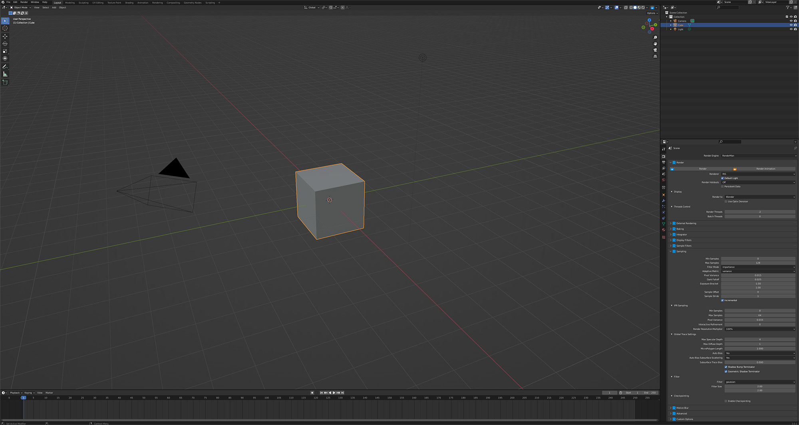

User Interface in Blender
Source:
https://rmanwiki-27.pixar.com/space/RFB27/544637109/User+Interface+in+Blender
Downloaded: 2026-06-15T03:49:12+00:00

Blender 工作区
Trace Sets 编辑器
Blender 字符串令牌
灯光混合器编辑器
灯光链接编辑器
Blender 预设浏览器